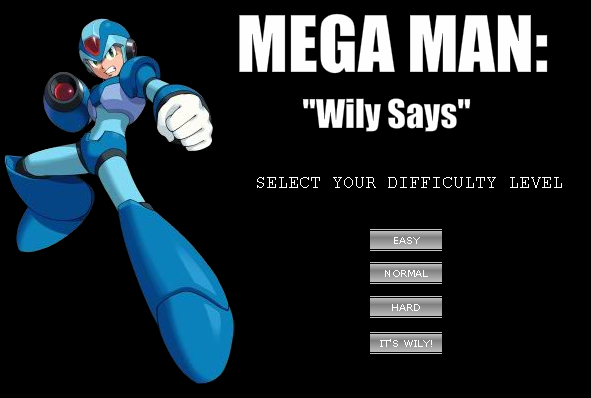
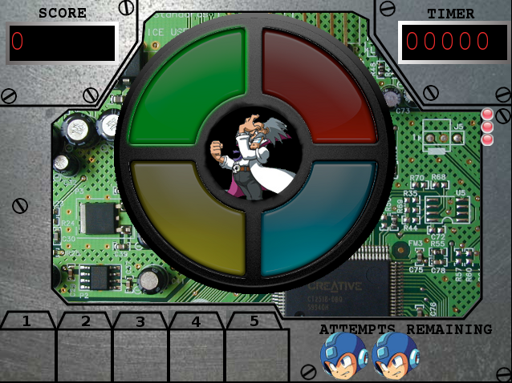

MEGA MAN: Wily Says!
HELP!
This is the help information for Mega Man: Wily Says!, the smash-megahit
game currently sweeping teh intarnets. Here's how to play the game.

Once the game loads up, click inside the game window with your mouse to
make sure it has focus. Then hit your SPACE BAR. Click on one of the
difficulty setting buttons, to choose the difficulty. This determines
how many levels you play, and how long the patterns you're challenged with,
will be. Once you've done that, watch the intro; it'll give you a little
bit of background story, and a little bit of information on how to play
the game.
The interface

- The "SCORE" in the upper left corner of the window displays your current
total score. Higher scores mean you're more awesome, therefore higher scores
are better. You increase your score by completing more patterns.
- The "TIMER" in the upper right corner of the window displays the amount of
time you have left to repeat the pattern. The timer may run faster or slower
depending on what difficulty setting you chose, as well as any powerups
you may or may not be using right then.
- The numbered slots on the bottom left are your powerup slots. Hidden
inside the patterns are powerups; when you complete a pattern that has a
powerup associated with it, you get the powerup, and it shows up in one
of these numbered slots. To use one of the powerups, you can either click
on the powerup, or press the number key on your keyboard (non-numeric keypad)
above that powerup. Here are the powerups and what they do:
| Powerup Icon |
Powerup Name |
Powerup Effect |
 |
SKIP |
Skips the current pattern iteration you're on, and gives you all the score points for it |
 |
FORGIVENESS |
If you have a FORGIVENESS in your inventory, and you mess up a pattern, then you don't have to start over on a new pattern; it's as if the mistake never happened. |
 |
POINT DOUBLER |
When this powerup is used, the current pattern iteration will give you double the number of points it normally would have. |
 |
SLOW DOWN |
When this powerup is used, the timer runs at an incredibly slow speed, virtually stopping. |
- The "ATTEMPTS REMAINING" at the bottom right will show many lives
you have left. Every time you miss a light on a pattern, you will
lose one life. When you reach 0 lives, the lock will self-detonate,
and you will experience the crushing failure that is Game Over.
- The red lights on the right side of the screen indicate the total
number of lights in this pattern; for example, if there are 3
red lights, then this pattern has 3 lights to its combination.
Therefore you will have one iteration with one light, one
iteration with 2 lights, and one iteration with 3 lights.
We all remember how a Simon Says works, right?
As you complete iterations, those iterations will turn lights
from red to green, showing how far away you are from completing
the lock/pattern and progressing to the next level.
- The thing that looks like a Simon Says in the middle of the screen
isn't actually a simon says. Yeah, I know - I know, it looks
like one, but it's *not*. It's called the WilyLok, "an ingenious
pattern-based locking mechanism" designed to keep Mega Man
out of Dr Wily's laboratory while he destroys the world.
This is where most of the gameplay happens. All you have to do
is press the lighted buttons in the same pattern that they
flash. All 4 lights will flash once, and then the lights you
need to press will light individually. Then all 4 lights
will flash again, and the timer will start ticking.
Now you have to click on the lights in the same pattern that
you just watched. Failure to do so will explode your skull
and you'll lose a life - and what's worse, you'll have to
start over.
Simple, right?
Credits
Pre-formatting this because I'm lazy.
Most of this was assembled ad-hoc from various places around the internet
for a game demo to accompany a resume, so it was never really intended for
public consumption. But before the whole thing was over, it just became
so ridiculous I couldn't possibly keep it to myself.
The theme music is a MIDI version of Depeche Mode's "Master and Servant". That's
where the name "Mastermind" for the Simon Says came from.
The graphics were mostly stolen from mega man fansites around the internet.
The explosion graphic was lifted from someone. I forget who. It's the same
one I used in my "HOLY *@#%! ALIENS!" space shooter demo.
The sound effects, again, were lifted from various free sites around the
net. I honestly didn't keep track of them. I know they were all straight off
Google links.
I'm solely responsible for this atrocity; if you want to send me hate mail,
you're a megaman purist and you want to tear off my head, you think this was
the most ridiculous idea for a game demo ever, or if you want to send me
big buckets of money because I'm just so goddamned AWESOME, send mail
to andrew@aklabs.net, or follow me on twitter (@akesterson). Thanks.
The entire demo was coded in ActionScript 3 on Adobe Flash CS3, graphics
were chopped up with The GIMP, sounds composed/trimmed in Audacity. I think
I spent about a total of 48 hours on this project, and that includes learning
ActionScript 3. I'll release the source in a few days after an employer
is done looking at it.